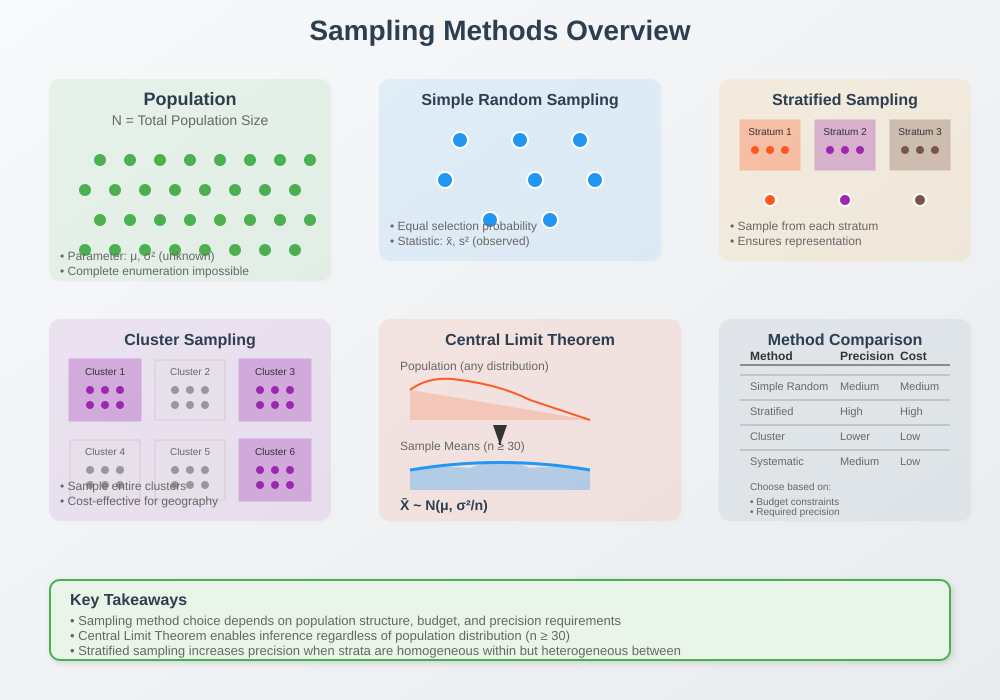
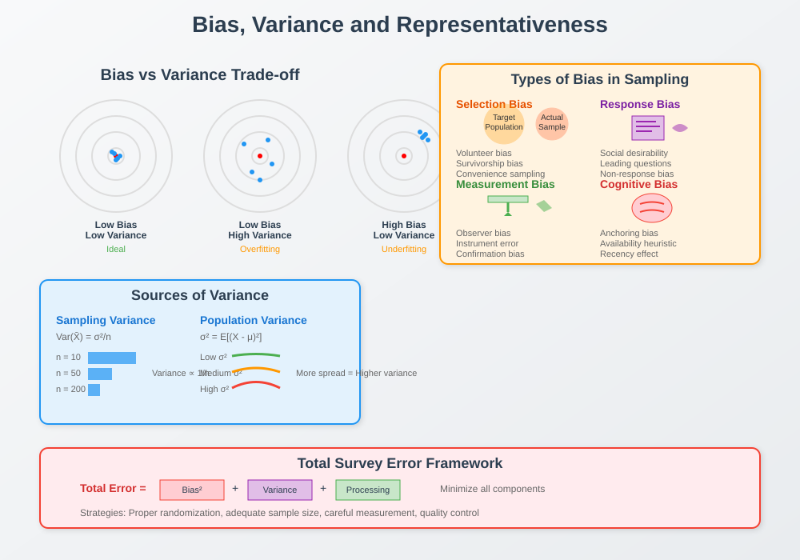
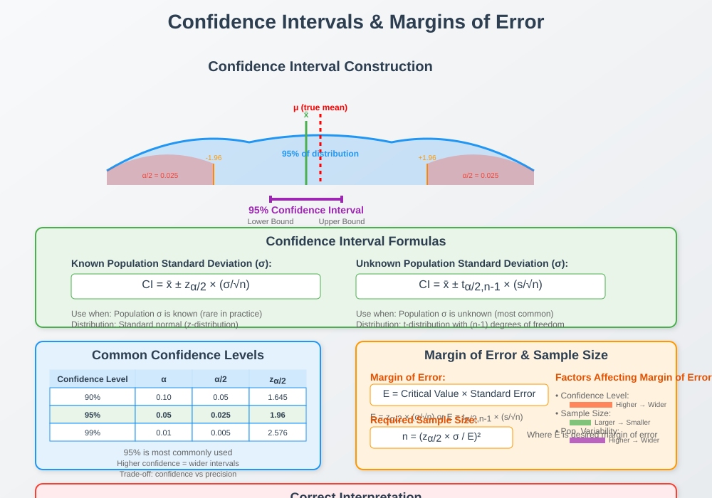
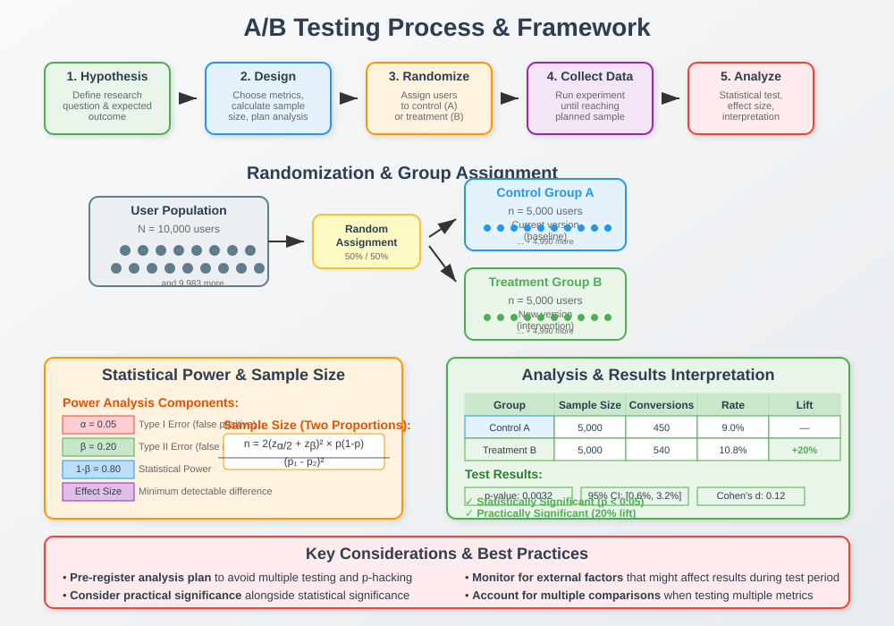

Sampling & Experimental Design
📋 Quick Navigation
- Sampling Methods
- Bias, Variance & Representativeness
- Confidence Intervals & Margins of Error
- A/B Testing Fundamentals
- Practical Applications
- Code Examples
- References & Further Reading
🎯 Learning Objectives
By the end of this guide, you will understand:
- Different sampling methods and when to use each
- How bias and variance affect data quality and conclusions
- How to calculate and interpret confidence intervals
- The fundamentals of designing and analyzing A/B tests
- Best practices for experimental design in data science
📊 Sampling Methods

Key Concepts
Population vs Sample:
- Population: The entire group we want to study or make inferences about
- Sample: A subset of the population that we actually observe and collect data from
- Parameter: A numerical characteristic of a population (usually unknown)
- Statistic: A numerical characteristic of a sample (computed from observed data)
Types of Sampling Methods
Random Sampling:
- Simple Random Sampling: Every member of the population has an equal probability of being selected
- Systematic Sampling: Select every kth element from a randomly ordered list
- Advantages: Unbiased, mathematically sound for inference
- Disadvantages: May miss important subgroups, requires complete population list
Stratified Sampling:
- Process: Divide population into homogeneous subgroups (strata), then sample from each stratum
- Proportional Stratified: Sample size from each stratum proportional to stratum size
- Disproportional Stratified: Sample sizes chosen to ensure adequate representation of all strata
- Advantages: Ensures representation of all subgroups, often more precise than simple random sampling
- Use Cases: Market research, political polling, quality control
Cluster Sampling:
- Process: Divide population into clusters, randomly select clusters, then sample all or some units within selected clusters
- Single-Stage: Sample all units within selected clusters
- Multi-Stage: Further sample within selected clusters
- Advantages: Cost-effective for geographically dispersed populations
- Disadvantages: Higher sampling error than simple random sampling
Sampling Distribution Properties
Central Limit Theorem:
X̄ ~ N(μ, σ²/n)
Where:
- X̄ = sample mean
- μ = population mean
- σ² = population variance
- n = sample size
Key Implications:
- Sample means are approximately normally distributed for large n (typically n ≥ 30)
- Standard error decreases as √n
- Enables construction of confidence intervals and hypothesis tests
⚖️ Bias, Variance & Representativeness

Types of Bias
Selection Bias:
- Definition: Systematic differences between the sample and target population
- Volunteer Bias: Self-selected participants differ from general population
- Survivorship Bias: Only considering "survivors" or successful cases
- Convenience Sampling Bias: Using easily accessible participants
Response Bias:
- Social Desirability Bias: Respondents give socially acceptable answers
- Leading Questions: Question wording influences responses
- Non-Response Bias: Non-respondents differ systematically from respondents
- Recall Bias: Inaccurate memory of past events
Measurement Bias:
- Observer Bias: Researcher expectations influence observations
- Instrument Bias: Systematic errors in measurement tools
- Confirmation Bias: Interpreting data to confirm preconceptions
Variance Components
Sampling Variance:
Var(X̄) = σ²/n
Factors Affecting Variance:
- Sample Size: Larger samples reduce variance
- Population Variability: More diverse populations increase variance
- Sampling Method: Stratified sampling can reduce variance compared to simple random
Total Survey Error:
Total Error = Bias² + Variance + Processing Error
Representativeness Assessment
Demographic Comparisons:
- Compare sample demographics to known population parameters
- Check for under- or over-representation of key groups
- Use weighting techniques to adjust for known biases
Response Rate Analysis:
- Calculate and report response rates by subgroup
- Investigate patterns in non-response
- Implement follow-up strategies for non-respondents
📈 Confidence Intervals & Margins of Error

Confidence Interval Construction
For Population Mean (Known σ):
CI = X̄ ± z₍α/2₎ × (σ/√n)
For Population Mean (Unknown σ):
CI = X̄ ± t₍α/2,n-1₎ × (s/√n)
Where:
- X̄ = sample mean
- z₍α/2₎ = critical z-value for desired confidence level
- t₍α/2,n-1₎ = critical t-value with n-1 degrees of freedom
- s = sample standard deviation
- n = sample size
Common Confidence Levels
Standard Confidence Levels:
- 90% Confidence: z = 1.645
- 95% Confidence: z = 1.96
- 99% Confidence: z = 2.576
Margin of Error
Definition:
Margin of Error = Critical Value × Standard Error
Factors Affecting Margin of Error:
- Confidence Level: Higher confidence = larger margin of error
- Sample Size: Larger sample = smaller margin of error
- Population Variability: More variability = larger margin of error
Sample Size Calculation:
n = (z₍α/2₎ × σ / E)²
Where E is the desired margin of error.
Interpretation Guidelines
Correct Interpretation:
- "We are 95% confident that the true population mean lies between [lower bound] and [upper bound]"
- The interval either contains the true parameter or it doesn't
- 95% refers to the long-run frequency of intervals that contain the true parameter
Common Misinterpretations:
- ❌ "There's a 95% chance the true mean is in this interval"
- ❌ "95% of the data falls within this interval"
- ❌ "The true mean is definitely in this interval"
🧪 A/B Testing Fundamentals

A/B Testing Framework
Test Design Components:
- Hypothesis: Clear statement of expected difference
- Primary Metric: Single most important outcome measure
- Secondary Metrics: Additional outcomes of interest
- Sample Size: Calculated based on effect size and power requirements
- Randomization: Method for assigning users to treatment groups
Statistical Power and Sample Size
Power Analysis Components:
- α (Alpha): Type I error rate (typically 0.05)
- β (Beta): Type II error rate (typically 0.20)
- Power (1-β): Probability of detecting true effect (typically 0.80)
- Effect Size: Minimum meaningful difference to detect
Sample Size Formula (Two Proportions):
n = 2 × (z₍α/2₎ + z₍β₎)² × p(1-p) / (p₁ - p₂)²
Where:
- p = average of p₁ and p₂
- p₁, p₂ = expected proportions in each group
- z₍α/2₎ = critical value for significance level
- z₍β₎ = critical value for power
Randomization Strategies
Simple Randomization:
- Random assignment with fixed probability (usually 50/50)
- Easy to implement but may result in unequal group sizes
- Suitable for large sample sizes
Stratified Randomization:
- Randomize within pre-defined strata (e.g., user segments)
- Ensures balance across important characteristics
- Recommended for heterogeneous populations
Blocked Randomization:
- Ensure equal group sizes within blocks of consecutive participants
- Maintains balance throughout the experiment
- Useful when enrollment occurs over time
Analysis Approaches
Intention-to-Treat (ITT):
- Analyze participants in originally assigned groups
- Preserves randomization benefits
- Conservative approach, includes non-compliers
Per-Protocol:
- Analyze only participants who completed the intervention
- May introduce bias through selective dropout
- Useful for understanding treatment efficacy
Statistical Tests:
- Proportions: Z-test or Chi-square test
- Means: T-test or Mann-Whitney U test
- Multiple Comparisons: Bonferroni or Benjamini-Hochberg correction
💡 Practical Applications
Experimental Design Best Practices
Pre-Experiment Checklist:
- Define clear, measurable objectives
- Calculate required sample size
- Plan for potential confounding variables
- Establish data collection protocols
- Create analysis plan before seeing data
During Experiment:
- Monitor data quality and collection process
- Check for balance in treatment assignment
- Document any deviations from protocol
- Avoid peeking at results before planned analysis
Post-Experiment:
- Follow pre-specified analysis plan
- Report all planned analyses
- Discuss limitations and potential biases
- Consider external validity and generalizability
Common Pitfalls and Solutions
Multiple Testing Problem:
- Issue: Increased Type I error rate when testing multiple hypotheses
- Solutions: Bonferroni correction, False Discovery Rate control, pre-specify primary outcome
Peeking Problem:
- Issue: Repeated testing inflates Type I error rate
- Solutions: Sequential testing methods, pre-specified interim analyses, sufficient power calculation
Selection Bias:
- Issue: Non-representative samples
- Solutions: Proper randomization, stratification, careful population definition
Attrition Bias:
- Issue: Differential dropout between groups
- Solutions: Minimize dropout, intention-to-treat analysis, sensitivity analyses
💻 Code Examples
Python Implementation

import numpy as np
import pandas as pd
import matplotlib.pyplot as plt
from scipy import stats
import seaborn as sns
# Sample Size Calculation for A/B Test
def calculate_sample_size(p1, p2, alpha=0.05, power=0.8):
"""
Calculate sample size for two-proportion z-test
Parameters:
p1, p2: Expected proportions in each group
alpha: Type I error rate
power: Statistical power (1 - Type II error rate)
"""
# Effect size
effect_size = abs(p1 - p2)
# Pooled proportion
p_pooled = (p1 + p2) / 2
# Critical values
z_alpha = stats.norm.ppf(1 - alpha/2)
z_beta = stats.norm.ppf(power)
# Sample size calculation
n = 2 * (z_alpha + z_beta)**2 * p_pooled * (1 - p_pooled) / effect_size**2
return int(np.ceil(n))
# Confidence Interval Calculation
def confidence_interval(data, confidence=0.95):
"""
Calculate confidence interval for sample mean
"""
n = len(data)
mean = np.mean(data)
se = stats.sem(data) # Standard error
# t-critical value
t_crit = stats.t.ppf((1 + confidence) / 2, n - 1)
# Margin of error
margin_error = t_crit * se
return (mean - margin_error, mean + margin_error)
# A/B Test Analysis
def ab_test_analysis(control_data, treatment_data, alpha=0.05):
"""
Perform two-sample t-test for A/B test
"""
# Basic statistics
n_control = len(control_data)
n_treatment = len(treatment_data)
mean_control = np.mean(control_data)
mean_treatment = np.mean(treatment_data)
# Perform t-test
t_stat, p_value = stats.ttest_ind(control_data, treatment_data)
# Effect size (Cohen's d)
pooled_std = np.sqrt(((n_control - 1) * np.var(control_data, ddof=1) +
(n_treatment - 1) * np.var(treatment_data, ddof=1)) /
(n_control + n_treatment - 2))
cohens_d = (mean_treatment - mean_control) / pooled_std
# Confidence interval for difference
se_diff = pooled_std * np.sqrt(1/n_control + 1/n_treatment)
t_crit = stats.t.ppf((1 + (1-alpha)) / 2, n_control + n_treatment - 2)
diff_ci = ((mean_treatment - mean_control) - t_crit * se_diff,
(mean_treatment - mean_control) + t_crit * se_diff)
results = {
'control_mean': mean_control,
'treatment_mean': mean_treatment,
'difference': mean_treatment - mean_control,
't_statistic': t_stat,
'p_value': p_value,
'significant': p_value < alpha,
'cohens_d': cohens_d,
'difference_ci': diff_ci
}
return results
# Example Usage
if __name__ == "__main__":
# Sample size calculation
required_n = calculate_sample_size(p1=0.1, p2=0.12, alpha=0.05, power=0.8)
print(f"Required sample size per group: {required_n}")
# Simulate A/B test data
np.random.seed(42)
control_group = np.random.normal(100, 15, 1000)
treatment_group = np.random.normal(105, 15, 1000)
# Analyze results
results = ab_test_analysis(control_group, treatment_group)
print(f"Control mean: {results['control_mean']:.2f}")
print(f"Treatment mean: {results['treatment_mean']:.2f}")
print(f"Difference: {results['difference']:.2f}")
print(f"P-value: {results['p_value']:.4f}")
print(f"Significant: {results['significant']}")
print(f"Effect size (Cohen's d): {results['cohens_d']:.3f}")
R Implementation
# Sample Size Calculation
calculate_sample_size <- function(p1, p2, alpha = 0.05, power = 0.8) {
effect_size <- abs(p1 - p2)
p_pooled <- (p1 + p2) / 2
z_alpha <- qnorm(1 - alpha/2)
z_beta <- qnorm(power)
n <- 2 * (z_alpha + z_beta)^2 * p_pooled * (1 - p_pooled) / effect_size^2
return(ceiling(n))
}
# A/B Test Analysis
ab_test_analysis <- function(control_data, treatment_data, alpha = 0.05) {
# Perform t-test
test_result <- t.test(treatment_data, control_data)
# Effect size
cohens_d <- (mean(treatment_data) - mean(control_data)) /
sqrt(((length(control_data) - 1) * var(control_data) +
(length(treatment_data) - 1) * var(treatment_data)) /
(length(control_data) + length(treatment_data) - 2))
return(list(
control_mean = mean(control_data),
treatment_mean = mean(treatment_data),
difference = test_result$estimate[1] - test_result$estimate[2],
t_statistic = test_result$statistic,
p_value = test_result$p.value,
significant = test_result$p.value < alpha,
confidence_interval = test_result$conf.int,
cohens_d = cohens_d
))
}
📚 References & Further Reading
Essential Textbooks
- "Sampling: Design and Analysis" by Sharon Lohr - Comprehensive coverage of sampling methods and survey design
- "Design and Analysis of Experiments" by Douglas Montgomery - Standard reference for experimental design principles
- "Statistical Methods for Research Workers" by R.A. Fisher - Classic foundation of experimental design methodology
- "Trustworthy Online Controlled Experiments" by Kohavi, Tang, and Xu - Modern guide to A/B testing in digital products
Academic Papers
- "The Central Limit Theorem and the Law of Large Numbers" (2019) - Mathematical foundations of sampling theory
- "A/B Testing: The Most Powerful Way to Turn Clicks into Customers" (2023) - Practical applications in business contexts
- "Randomization in Clinical Trials: Conclusions and Recommendations" (2020) - Best practices from medical research
Online Resources
- Khan Academy Statistics Course - Free introduction to sampling and inference
- Coursera: Introduction to Statistics - University-level course covering experimental design
- Google Analytics Academy - Practical A/B testing for web analytics
Tools and Software
- Python Libraries: scipy.stats, statsmodels, scikit-learn
- R Packages: pwr, survey, randomizr, infer
- Online Calculators: Optimizely Sample Size Calculator, Evan Miller's A/B Test Tools
- Commercial Platforms: Optimizely, VWO, Google Optimize
Professional Organizations
- American Statistical Association (ASA) - Professional standards and continuing education
- International Association of Survey Statisticians (IASS) - Specialized focus on survey methodology
- Society for Research Synthesis Methodology - Meta-analysis and systematic reviews
This documentation is designed for immediate deployment with MkDocs Material theme. All mathematical notation, code examples, and references are formatted for optimal learning experience in AI and data science education.